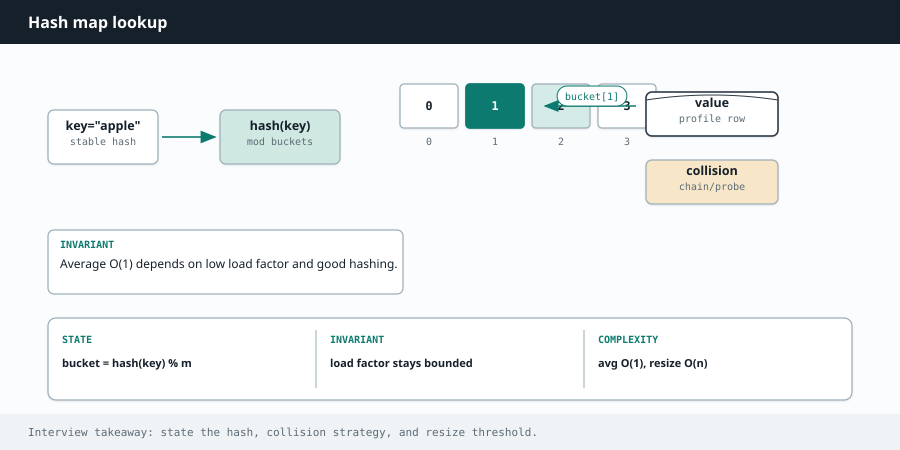
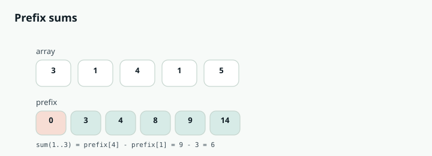

Competitive Programming
Chapter 03
Arrays and hashing


C O R E Pa T T E R N S
Arrays are just a row of boxes with numbered positions. Hashing is the trick of storing things by a key so you can find them again instantly. Put them together and you can solve a huge slice of all problems.
Why hashing is a superpower
A hash map (called dict in Python and HashMap in Java) lets you answer "have I seen this before, and where?" in roughly constant time. Instead of scanning the whole array again and again, you remember what you have seen as you go. A hash set is the same idea when you only care about presence, not a value attached to it. keys hash buckets (indexed) [0] "apple" [1] apple "mango" hash(key) [2] mango,pear = index [3] kiwi "pear" [4] "kiwi" A key is turned into a bucket index, so lookup does not depend on how many items you stored.
R E A C H F O R H A S H I N G W H E N Y O U S E E
"Find a pair / complement", "count how many times each thing appears", "have I seen this value", "group things that are the same in some way", or "check for duplicates". Anytime the brute force is a nested loop that keeps re-scanning, a hash map usually flattens it to a single pass.
Worked example: Two Sum
Problem. Given an array and a target, return the indices of the two numbers that add up to the target.
Brute force. Check every pair. That is two nested loops, O(n²).
The insight. For each number x , the partner you need is target - x . If you remember every number you have already passed in a map from value to its index, then for each new number you can ask the map "have I already seen your partner?" in one step. That turns O(n²) into O(n).
def two_sum(nums, target):
seen = {} # value -> index we saw it at
for i, x in enumerate(nums):
need = target - x # the partner that completes the pair
if need in seen: # have we already passed the partner?
return [seen[need], i]
seen[x] = i # remember this number for later
return [] # no pair found
int[] twoSum(int[] nums, int target) {
Map<Integer, Integer> seen = new HashMap<>(); // value -> index
for (int i = 0; i < nums.length; i++) {
int need = target - nums[i]; // partner we need
if (seen.containsKey(need)) { // seen it already?
return new int[]{ seen.get(need), i };
}
seen.put(nums[i], i); // remember this one
}
return new int[]{}; // no pair found
}
Notice we store each number only after checking, so we never pair a number with itself. That ordering matters.
The two other array moves you will use constantly
Frequency counting Count how many times each item appears. This solves anagrams, majority element, "first unique character", and many more. In Python, collections.Counter does it in one line. In Java, use a HashMap with getOrDefault .
from collections import Counter
def is_anagram(s, t):
# Two strings are anagrams if they use the exact same letters.
return Counter(s) == Counter(t)
boolean isAnagram(String s, String t) {
if (s.length() != t.length()) return false;
int[] count = new int[26]; // one slot per lowercase letter
for (int i = 0; i < s.length(); i++) {
count[s.charAt(i) - 'a']++; // add for s
count[t.charAt(i) - 'a']--; // remove for t
}
for (int c : count) if (c != 0) return false;
return true; // all balanced -> anagram
}
L E T T E R S M A P T O N U M B E R S
When a problem is only lowercase English letters, you can skip the hash map entirely and use an array of size 26. The index is c - 'a' , which turns 'a' into 0, 'b' into 1, and so on.
An array is faster than a map and shows you understand the constraint.
Grouping Put items into buckets keyed by something they share. Classic example: group anagrams together.
The shared key is the sorted version of each word, since all anagrams sort to the same string.
from collections import defaultdict
def group_anagrams(words):
groups = defaultdict(list)
for w in words:
key = "".join(sorted(w)) # anagrams share the same sorted key
groups[key].append(w)
return list(groups.values())
List<List<String>> groupAnagrams(String[] words) {
Map<String, List<String>> groups = new HashMap<>();
for (String w : words) {
char[] chars = w.toCharArray();
Arrays.sort(chars);
String key = new String(chars); // sorted key shared by anagrams
groups.computeIfAbsent(key, k -> new ArrayList<>()).add(w);
}
return new ArrayList<>(groups.values());
}
W A T C H O U T
Hash lookups are "on average" O(1), not guaranteed. Also, order is not preserved in a plain Java HashMap ; if you need insertion order, use LinkedHashMap . In Python, regular dict keeps insertion order, which is handy.
Deeper Intuition
Why hashing and prefix sums work
Both tricks remove repeated work. A hash map turns "have I seen this value" from a full rescan into a single O(1) lookup, so a nested loop collapses to one pass. Prefix sums precompute every running
total once, so the sum of any range is just the difference of two stored totals, again O(1) instead of re adding the range each time. the array 0 1 2 3 4 3 1 4 1 5 prefix sums (running total, one longer) 0 3 4 8 9 14 sum of index 1..3 = prefix[4] - prefix[1] = 9 - 3 = 6 A prefix array stores running totals, so any range sum becomes one subtraction.
Another worked example: Subarray Sum Equals K
Count how many contiguous subarrays add up to k. Keep a running total and a map of how many times each total has appeared. If the current total minus k has been seen before, every one of those earlier positions starts a subarray that sums to k. One pass, O(n).
def subarray_sum(nums, k):
count = 0
running = 0
seen = {0: 1} # one empty prefix with sum 0
for x in nums:
running += x
count += seen.get(running - k, 0) # earlier prefixes that hit k
seen[running] = seen.get(running, 0) + 1
return count
int subarraySum(int[] nums, int k) {
int count = 0, running = 0;
Map<Integer, Integer> seen = new HashMap<>();
seen.put(0, 1); // one empty prefix with sum 0
for (int x : nums) {
running += x;
count += seen.getOrDefault(running - k, 0);
seen.merge(running, 1, Integer::sum);
}
return count;
}
Going Deeper
What kinds of problems this solves
U S E T H I S P A T T E R N F O R
Anything about seeing a value before, counting how often things appear, pairing elements toward a target, grouping by a shared key, or answering range-sum questions quickly.
Whenever a brute force keeps rescanning the array, a hash structure or a prefix sum usually removes the rescanning.
| Problem type | Classic examples |
|---|---|
| Have I seen this | Contains Duplicate, Two Sum, Longest Consecutive Sequence, Intersection of Two Arrays |
| Frequency counting | Valid Anagram, Group Anagrams, Top K Frequent Elements, Majority Element, First Unique Character |
| Prefix sums | Subarray Sum Equals K, Range Sum Query, Product of Array Except Self, Contiguous Array |
| Grouping by a key | Group Anagrams, Sort Characters By Frequency, Find All Duplicates in an Array |
The algorithm, in a bit more detail
A hash map trades memory for speed. Instead of scanning the array again to answer "have I seen x", you record every value you pass in a map, so the next lookup is a single O(1) step. That one move turns many O(n squared) brute forces into O(n).
Prefix sums are the other core idea. If you precompute a running total, then the sum of any range from i to j is just prefix[j] - prefix[i-1] , computed in O(1). Combine a prefix sum with a hash map and you can count subarrays that hit a target sum in a single pass, which is exactly how "Subarray Sum Equals K" works.
Variations you will run into
The three shapes you will use constantly are a hash set when you only care whether something exists, a hash map when you need to remember a value like an index or a count, and a running prefix sum plus a map when the question is about contiguous ranges. Knowing which of the three fits is most of the work.
Edge cases and gotchas
Store a number in the map only after you check for its partner, otherwise a value can wrongly pair with itself.
Hash maps do not keep insertion or sorted order, so never rely on iteration order for correctness.
In Java use getOrDefault or merge for counting, and remember keys must be objects, so autoboxing of int to Integer is happening under the hood.
Lookups are O(1) on average but degrade in rare worst cases, which almost never matters for interviews but is worth knowing.
S T E P B Y S T E P
Watch Two Sum run on nums = [2, 7, 11, 15] with target = 9. We store each number as we pass it, so the check is a single lookup.
| i | nums[i] | need = target - nums[i] | seen so far | action |
|---|---|---|---|---|
| 0 | 2 | 7 | {} | 7 not seen, store 2 to 0 |
| 1 | 7 | 2 | {2: 0} | 2 is in seen, return [0, 1] |
Interview drill
Questions interviewers actually ask when this chapter's pattern is the signal.
More drills in the Interview Lab.
Q1. Two Sum
Return indices of two numbers that add to target. One solution guaranteed.
One pass: for each x check if target−x is in a map of seen values; else store x→index. O(n) time / space. Full solution in the Coding Interview Lab.
Q2. Group Anagrams
Group strings that are anagrams of each other.
Key each word by sorted characters (or a 26-count tuple). Append into a map of key → list. Return the map values. O(n · k log k) with sort keys, or O(n · k) with count keys.
from collections import defaultdict
def group_anagrams(strs):
buckets = defaultdict(list)
for s in strs:
key = tuple(sorted(s))
buckets[key].append(s)
return list(buckets.values())
Q3. Top K Frequent Elements
Return the k most frequent elements in an integer array.
Count frequencies, then either push into a size-k min-heap (O(n log k)) or bucket-sort by frequency (O(n)). Interviewers often ask you to beat a full sort.
Q4. Product of Array Except Self
Return an array answer where answer[i] is the product of all elements except nums[i], without using division, in O(n).
Left-to-right prefix products into the output, then a right-running suffix multiplier. Two passes, O(1) extra space beyond the output.
Q5. Longest Consecutive Sequence
Find the length of the longest consecutive elements sequence in O(n).
Put numbers in a set. Only start a streak when num−1 is absent. Walk upward counting. Each number enters a streak at most once → O(n).